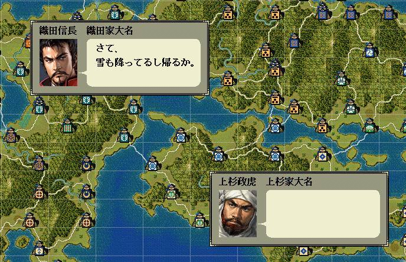
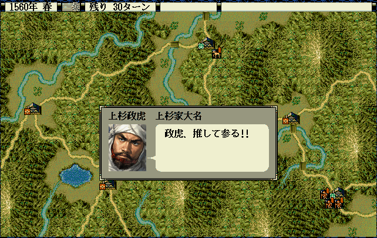

会話のためのダイアログを表示するAPIです。
大小関わらず、自作の独自イベントなどで利用することになるでしょう。

噴出ダイアログ《通常・左上》開始(int 武将番号【配列用】, string メッセージ)
噴出ダイアログ《通常・左上》更新(int 武将番号【配列用】, string メッセージ)
噴出ダイアログ《通常・左上》終了()
噴出ダイアログ《通常・右下》開始(int 武将番号【配列用】, string メッセージ)
噴出ダイアログ《通常・右下》更新(int 武将番号【配列用】, string メッセージ)
噴出ダイアログ《通常・右下》終了()
void カスタム::On_プレイヤ担当ターン《メイン画面》() {
// 左上、開いて、閉じる
噴出ダイアログ《通常・左上》開始(100, "ああ\x0Aマイクのテストテスト" );
噴出ダイアログ《通常・左上》終了();
// 右下、開いて、閉じる
噴出ダイアログ《通常・右下》開始(102, "ああ、眠いなぁ～" );
噴出ダイアログ《通常・右下》終了();
噴出ダイアログ《通常・左上》開始(100, "え～本日の～" );
// 左上ひらいたままで… 右が連続メッセージ
噴出ダイアログ《通常・右下》開始(102, "うっせーぞっｐ!!" );
噴出ダイアログ《通常・右下》更新(102, "返れ!!" );
噴出ダイアログ《通常・右下》更新(102, "いや、帰れ!!" );
// 右下も開いたままで… ダイアログで問いあわせ
int 答え = 実行／取消ダイアログ表示("帰りますか？");
if ( 答え ) {
噴出ダイアログ《通常・右下》更新(102, "わかったようだな" );
} else {
噴出ダイアログ《通常・右下》更新(102, "いいから帰れ!!" );
}
噴出ダイアログ《通常・左上》更新(100, "さて、\x0A雪も降ってるし帰るか。" );
噴出ダイアログ《通常・左上》終了();
噴出ダイアログ《通常・右下》更新(102, "やっと帰ったか。" );
噴出ダイアログ《通常・右下》終了();
}
void カスタム::On_ターン変更《攻城中画面》(int ターン数) {
if ( Is_野戦中() && 1 <= 残りターン数 && 残りターン数 < 30 ) {
if ( Get_天気() == 天気::雨 ) { // 前のターンが雨だった。まだこれからのターンがどうなるかは不明。
噴出ダイアログ《通常・左上》開始(100, "さて、\x0A雨降ったしもう帰るか。" );
噴出ダイアログ《通常・右下》開始(102, "じゃ、俺も帰ろ!!" );
噴出ダイアログ《通常・左上》終了();
噴出ダイアログ《通常・右下》終了();
}
}
}
同じく「ある武将Ａ」が「右下で」噴き出しを出している最中に、
「別の武将Ｂ」が「同じ右下で」噴き出しを出すことはダメ。
一旦閉じること。
信長と勝家は話していた。
勝家の右下の噴き出しを閉じたあとで、右下に秀吉を登場させている。
信長：左上 開始 「勝家よ」 勝家：右下 開始 「はい」 信長：左上 更新 「腹が減った」 勝家：右下 更新 「私も」 信長：左上 終了 勝家：右下 終了 信長：左上 開始 「外へ出かけるか」 秀吉：右下 開始 「私もいきまする」 信長：左上 終了 秀吉：右下 終了
信長と勝家は話していた。
信長側の噴出を閉じず、信長の噴出を開いたまま、秀吉が左上で新たに噴き出しを出している。
これをすると、噴出の背景描画が乱れるときがある。
信長：左上 開始 「勝家よ」 勝家：右下 開始 「はい」 信長：左上 更新 「腹が減った」 勝家：右下 更新 「私も」 信長：左上 更新 「外へ出かけるか」 勝家：右下 終了 秀吉：左上 開始 「私もいきまする」 // アウト!! 左上の信長の枠を開いたまま、さらに同じところに秀吉の枠を開いている 信長：左上 終了 秀吉：左上 終了
void 噴出ダイアログ《戦場・中央》表示(int 武将番号【配列用】, string メッセージ)
この噴き出しダイアログは、天翔記の戦場にてよくみかける噴き出しと同一のものであり、 左上や右下ではなく、画面中央に１つ出るモーダルタイプである。
この関数は戦場でのみ利用可能です。ダイアログ終了関数を呼び出す必要はありません。

void カスタム::On_残りターン変更《戦争画面》(int 残りターン数) {
// 今表示中しているマップ中に居る人の武将番号【配列用】のリストを得る
番号リスト型 list = Get_出陣中の武将番号リスト【配列用】《表示中マップ》();
if (list.size() > 0) {
int iBushouID = list[0];
string 名前 = Get_名前(iBushouID);
噴出ダイアログ《戦場・中央》表示(iBushouID, 名前 + "、推して参る!!");
}
}
ダイアログの文章は、語句変化 を利用して作成することが多いため、
そちらも参照してください。
「噴出ダイアログ」に関する主な所は以上となります。 詳しくは「ダイアログ情報型.h」を参照してください。